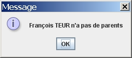
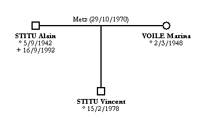

Il faut, au préalable, sélectionner une ou plusieurs personnes. Quand vous cliquez sur le bouton  ou allez dans le menu Personnes et choisissez Parents, les parents des personnes sélectionnées s'ajoutent à l'arbre.
ou allez dans le menu Personnes et choisissez Parents, les parents des personnes sélectionnées s'ajoutent à l'arbre.
Si la personne sélectionnée n'a pas de parents, une fenêtre l'indique. Par exemple, quand on demande des parents de François TEUR :

Exemple d'ajout des parents de Vincent STITU :
